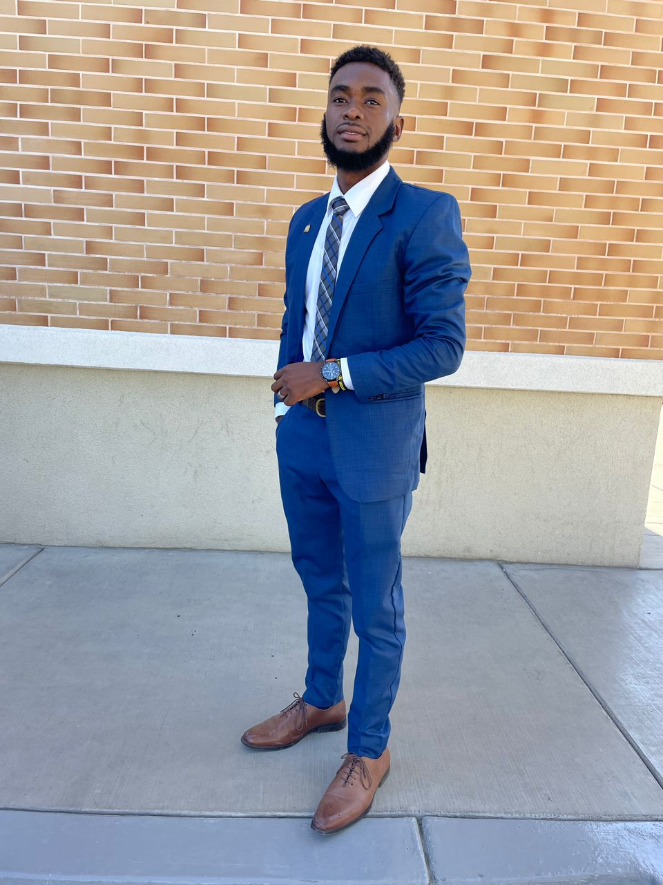

Quelitho Gabriel | WDD 130
Hello! My name is Quelitho Gabriel I am from Port-Au-Prince, Haiti. I am a student at Brigham Young University. I enjoy playing video game, listen to music, I love hiking, and I love to read the scriptures and other books, I like to play football and I like to cook, I think I am a good cook, because I got a lot of compliments, when I was a missionary, and also in my family.
My mission helped me a lot to get closer to the Savior, it allowed me to help the people I met. Serving a mission was a difficult decision in my life. On my return I received the blessing of serving in the temple, these moments marked my life. Since my return, the country has gone through difficult times, my family and I were forced to leave our home, God in his love protected us and allowed us to find a place to live. I don't know how long these things will last, but I know that God will continue to guide us and protect us. Making the effort to go to the temple as often as possible, helps me get through these difficult times